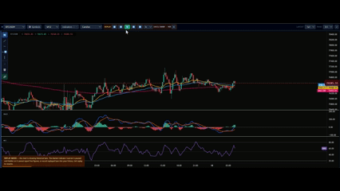

It shows its work, not just a badge
Most market scanners give you a colored label and leave you to trust it. ACM shows the reasoning behind every verdict, at whatever depth you want to see.
Every instrument, one board
The scanner panel runs ten classic technical studies across nine timeframes, for every instrument your plan covers, and reduces it to a single verdict: bullish, bearish, or mixed.
- Price, today's move, and performance from one week to one year
- How many of the ten studies agree
- Directional cards pulse gently so your eye goes straight to them
10 indicators feed the scanner's scored Bullish/Bearish/Mixed verdict 3 are context tools available on every chart, without a directional read — all 13 available to attach manually.
How long has this actually been true?
Instead of just "bullish," ACM tells you it's been bullish for two hours and fourteen minutes, and what it was before that. Divergences — early signs a move is losing steam — are tracked across every timeframe in the same grid.
- State-change history per instrument, not a static label
- Price-vs-momentum divergence, mapped across nine timeframes at once
- See at a glance which timeframes agree and which are warning you

Instrument, then timeframe, then indicator
From the all-timeframe view above, drill into a single timeframe — say M30 on BTCUSD — and every one of the ten indicators explains itself in a sentence, with its own verdict. Tap any row to expand it further: the golden cross, the exact squeeze percentage, when the divergence fired.
- Symbol → timeframe → indicator, three taps deep, never a black box
- Ten studies, each with a one-line explanation of what it's seeing
- Expand any indicator for the underlying numbers — crossovers, bars since, divergence age
Rewind the market and watch the verdict update
Step backward through price history and replay it forward, with your indicators recalculating candle by candle — no look-ahead, no repainting. The Market Indicator Scanner is paused and hidden during replay so it can never report live figures beside a historical chart.
- Step back through history 1 or 10 bars at a time, then play forward frame by frame or at speed
- Works on any timeframe, from M1 up to the monthly chart
- Replay works on a single 1×1 chart.
- See exactly when a verdict flips, not just that it did
- Included on Pro and Pro+
